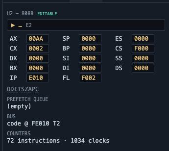
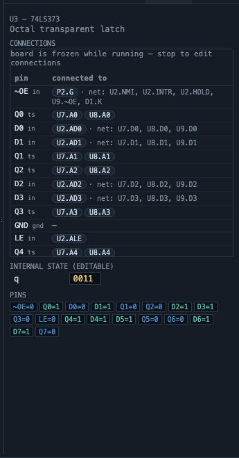
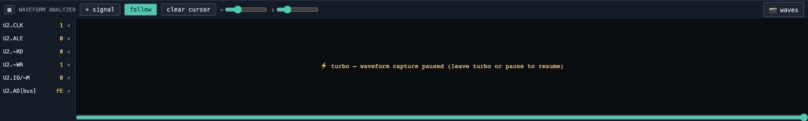

Start, pause, step by cycle or instruction, rewind through history, and run at real 8088 speed.
The speed slider spans ten stops from two steps per second — slow enough to watch a bus cycle
assemble itself — up to max, where the compiled fast path reaches real 8088 speed. Whatever
speed you pick, the instruction stream is identical; only the wall-clock pacing changes.
Watching the CPU
The CPU panel is the machine's architectural state: registers, segment
registers, individual flags, the prefetch queue with a live disassembly of what it holds, and the
current bus cycle. Pause and every field becomes editable — including clicking a flag to toggle
it.
The CPU panel — Registers, segment registers, individual flags, the prefetch queue with a live disassembly of what it holds, and the current bus cycle.

Registers are editable — Pause and every field becomes editable — type a new value into any register, or click a flag to toggle it. Writing CS even flushes the prefetch queue, exactly like the real chip.
Stepping
⭢ cycle advances one clock half-step; ⭢ insn runs
exactly one instruction. Cycle stepping is how you see a bus cycle for what it is: address out with
ALE, strobe low, data sampled, strobe high.
Cycle step 1 — ⭢ cycle advances one clock half-step. Watch the bus cycle assemble itself across four clocks: address out with ALE, strobe low, data sampled, strobe high.Cycle step 2 — ⭢ cycle advances one clock half-step. Watch the bus cycle assemble itself across four clocks: address out with ALE, strobe low, data sampled, strobe high.Cycle step 3 — ⭢ cycle advances one clock half-step. Watch the bus cycle assemble itself across four clocks: address out with ALE, strobe low, data sampled, strobe high.Cycle step 4 — ⭢ cycle advances one clock half-step. Watch the bus cycle assemble itself across four clocks: address out with ALE, strobe low, data sampled, strobe high.
Watching chips
The Chip panel shows any selected chip's internal state — editable while paused —
plus a live badge for every pin, colour-coded by logic value.

The Chip panel — Any chip's internal state — editable while paused — plus a live badge for every pin, colour-coded by logic value.
Turbo
⚡ turbo compiles the board's clock tree and batches CPU execution, reaching
around 5 MHz of simulated 8088. Memory goes through the proved map and IO still goes through real
pins, so behaviour is bit-identical — the one cost is that waveform capture pauses while turbo is
engaged.
Turbo: real-time speed — ⚡ turbo compiles the clock tree and batches the CPU, reaching around 5 MHz of simulated 8088. Memory goes through the proved map, IO still through real pins — the instruction stream is bit-identical.

Capture pauses in turbo — The one cost of turbo is waveform capture, and the analyzer says so plainly. Leave turbo or pause and it resumes.
Rewind
The rewind slider travels backwards through recorded history. This is not a replay: the
entire machine — registers, memory, every chip's internal state — returns to how it was, and you can
run forward again from there.
Rewound to 15% — The rewind slider travels backwards through recorded history. This is not a replay: registers, memory and every chip's internal state return to how they were, and you can run forward again from there.Rewound to 45% — The rewind slider travels backwards through recorded history. This is not a replay: registers, memory and every chip's internal state return to how they were, and you can run forward again from there.Rewound to 80% — The rewind slider travels backwards through recorded history. This is not a replay: registers, memory and every chip's internal state return to how they were, and you can run forward again from there.